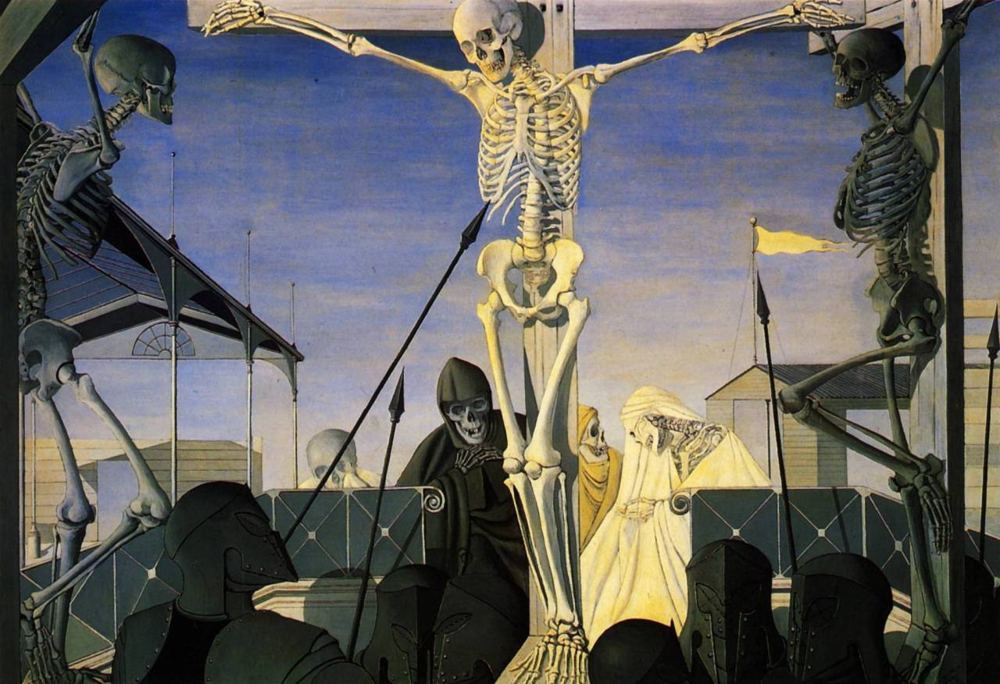

Minibiografía Absolutamente Breve.
Nací en 1992, en la Ciudad de México y aqui he radicado desde entonces.
Siempre muy interesado por las letras, me he forjado una trayectoria literaria
considerablemente extensa. Hoy en dia doy cursos de poesía experimental en La UNAM,
lugar en el que estudie mi primera carrera, Literatura y letras hispnoamericanas.
Después para continuar con mi educación universitaria entre en la carrera de
Comunicación y Medios Digitales. La finalidad de esta preparacion es el deseo de crear peliculas.
EL cine es una pasión compleja y un arte muy completo, lo que reqiuere de una preparación extensa.
He visto mas de 5000 peliculas en los ultimos 4 años y he leído 2000 libros a la par, alimento que
espero de furtos en los ambitos en los que deseo desarrollarme. Sin más que comentar espero disfrute
su visita a este pequeño CV personal.